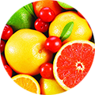
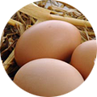

узнайте почему
Countour Pro
настоящий хозяин на кухне...
что можно нарезать?

фрукты
овощи

яйца

зелень
что можно нарезать?
фрукты
овощи
яйца
зелень
Ножи Contour Pro Knives изготовлены по классическому дизайну, имеют совершенно новые, идеально сбалансированные ручки, лезвия с косым, вогнутым острым краем. Дизайн рукоятки продуман так, чтобы Ваша рука не уставала даже при очень длительном использовании ножей.
Набор ножей Contour Pro Knives прекрасно подойдет для точной нарезки, тоненького нарезания, нарезания кубиками и рубки, шинковки. Вы легко сможете измельчать овощи и фрукты, мясо или сыр, замороженные или горячие продукты, а также кости! При этом ножи остаются острыми и их не нужно будет точить!
Преимущества
Countour Pro
- – Острое лезвие из отличной прочной стали, не требует заточки
- – Не выскальзывают из руки благодаря мягкой силиконовой рукоятке
- – Минимальные усилия для нарезки даже замороженных продуктов
- – Легкий контроль во время работы благодаря правильному центру тяжести
- – Удобно крепятся на стену с помощью магнитного держателя, экономят место на кухне
- – Специальный тесак рубит кости без осколков
- – Удобная и быстрая разделка мяса и рыбы на филе с помощью длинного гибкого ножа